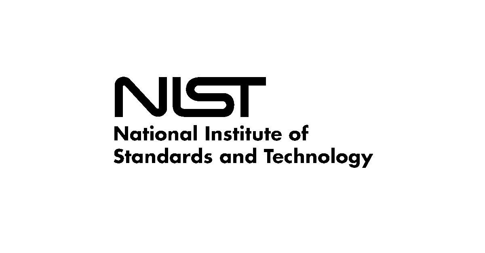

My Experience
Cornell Cup Robotics – Software Engineer | Ithaca, NY
September 2024 – Present
• Architecting conversational AI system using OpenAI's text-to-speech API and WSL terminal to incorporate into C1C0 robotic lab assistant
• Implementing command classification engine using cosine similarity algorithms, pandas, and NumPy vectorization to categorize different user audio commands
and generate context-based responses
Cornell University – Blockchain Engineer Intern | Ithaca, NY
March 2024 – May 2024
• Collaborated with 2 members to implement IBM Hyperledger Fabric consensus protocols and modular architecture for cotton supply chain surveillance and transparency
• Developed smart contracts 7+ hours a week using Go and Docker to automate stakeholder transactions on the supply chain
• Built 7 functions and 10 cotton asset types with Go, enabling 6 stakeholders to transfer and modify supply chain assets
Extern – IgniteXL Venture Capital Extern | Virtual
May 2024 – July 2024
• Conducted in-depth research using platforms like Crunchbase and ZoomInfo to gather data and insights on the industry and performance of 50+ companies, such as
compound annual growth rate, funding stages, and regulatory risks
• Prompt-engineered AI tools like Perplexity and Anthropic to brainstorm 15 lead startups that IgniteXL can invest in
• Presented a concise and impactful 4-page venture capital investment summary incorporating research insights and recommendations on Frame Fitness startup company
to provide venture capital experts with a prospective investment
NIST – Data Science Intern | Gaithersburg, MD
June 2022 – August 2022

• Processed 400+ pages of atomic spectra data into computer-readable formats for NIST databases via Excel and Adobe Spark
• Standardized spreadsheet data formatting and removed errors to make it usable for NASA missions and sponsored projects
• Gathered reference materials from data compilers and presented findings to a 10-member NIST employer panel
George Mason University – Data Science Research Intern | Fairfax, VA
June 2021 – February 2022
• Developed Python algorithms using regex and Word2Vec to analyze keyword-scam website correlations on 300+ scams
• Trained supervised prediction models to identify scams with at least 98% accuracy by using 10000+ labeled data points